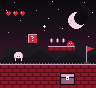

Материалы
Главные темы по каждому языку и инструменту направления «Разработка игр» — коротко и с примерами кода. Нажми на название, чтобы открыть темы.
Переменные и типы
Сначала пишут тип, потом имя. int — целое число, float — дробное, bool — да или нет, string — строка.
int lives = 3;
float speed = 5.5f;
bool isAlive = true;
string playerName = "Герой";Условия
if выполняет код, если условие верно, а else — если нет.
if (lives <= 0)
{
Console.WriteLine("Игра окончена");
}
else
{
Console.WriteLine("Жизней: " + lives);
}Циклы
for повторяет код нужное число раз, foreach проходит по всем элементам массива.
for (int i = 1; i <= 3; i++)
{
Console.WriteLine("Волна " + i);
}
string[] items = { "Меч", "Щит" };
foreach (string item in items)
{
Console.WriteLine(item);
}Методы
Функции в C# называются методами. В скобках — параметры, перед именем — тип результата.
static int Damage(int power, int armor)
{
return power - armor;
}Классы
Класс описывает объект игры: его данные и действия.
class Enemy
{
public int Health = 100;
public void TakeDamage(int amount)
{
Health -= amount;
}
}Сцены и объекты
Игра в Unity состоит из сцен, а сцена — из игровых объектов: персонажей, камер, света. Объект можно создать и из кода.
GameObject box = GameObject.CreatePrimitive(PrimitiveType.Cube);
box.transform.position = new Vector3(0, 1, 0);Скрипты
Поведение объекта задают скриптом на C#. Скрипт — это класс-наследник MonoBehaviour, его вешают на объект как компонент.
using UnityEngine;
public class Coin : MonoBehaviour
{
void Start()
{
Debug.Log("Монета появилась");
}
}Движение в Update
Метод Update вызывается каждый кадр — в нём читают нажатия и двигают персонажа.
void Update()
{
float x = Input.GetAxis("Horizontal");
transform.Translate(x * 5f * Time.deltaTime, 0, 0);
}Столкновения
Методы вроде OnTriggerEnter2D срабатывают, когда объекты касаются друг друга.
void OnTriggerEnter2D(Collider2D other)
{
if (other.CompareTag("Player"))
{
Destroy(gameObject);
}
}Узлы и сцены
В Godot всё состоит из узлов. Из них собирают сцены: персонажа, уровень, меню. _ready срабатывает, когда узел появился.
extends Node2D
func _ready():
print("Сцена загружена")Переменные в GDScript
var создаёт переменную, тип можно указать через двоеточие, const — постоянная.
var lives = 3
var speed: float = 200.0
const MAX_LIVES = 5Движение персонажа
_physics_process вызывается каждый кадр физики, move_and_slide двигает персонажа с учётом стен.
extends CharacterBody2D
var speed = 200
func _physics_process(delta):
velocity.x = Input.get_axis("ui_left", "ui_right") * speed
move_and_slide()Сигналы
Сигнал — сообщение узла о событии, например о нажатии кнопки. Его подключают к своей функции.
func _ready():
$Button.pressed.connect(_on_button_pressed)
func _on_button_pressed():
print("Кнопка нажата")Вывод на экран
Программа начинается с функции main. std::cout выводит текст.
#include <iostream>
int main() {
std::cout << "Привет, игрок!" << std::endl;
return 0;
}Переменные и типы
Тип пишут перед именем: int, double, bool, std::string.
int lives = 3;
double speed = 5.5;
bool isAlive = true;
std::string name = "Герой";Условия
if и else выбирают, какой код выполнить.
if (lives > 0) {
std::cout << "Играем дальше";
} else {
std::cout << "Игра окончена";
}Циклы
for повторяет код нужное число раз.
for (int i = 1; i <= 3; i++) {
std::cout << "Уровень " << i << std::endl;
}Функции
Тип результата пишут перед именем, а типы параметров — в скобках.
int damage(int power, int armor) {
return power - armor;
}Акторы
Любой объект на уровне — актор: персонаж, дверь, монета. Свой актор — это класс C++, наследник AActor.
UCLASS()
class AMyCoin : public AActor
{
GENERATED_BODY()
};BeginPlay и Tick
BeginPlay срабатывает при старте игры, Tick — каждый кадр. Здесь монета вращается.
void AMyCoin::BeginPlay()
{
Super::BeginPlay();
}
void AMyCoin::Tick(float DeltaTime)
{
Super::Tick(DeltaTime);
AddActorLocalRotation(FRotator(0, 90 * DeltaTime, 0));
}Сообщения в лог
UE_LOG пишет сообщение в окно Output Log — так проверяют, что код сработал.
UE_LOG(LogTemp, Warning, TEXT("Монета собрана!"));Blueprints
Логику можно собирать без кода — соединяя визуальные блоки в редакторе Blueprints. Новички часто начинают именно с них.
Главные клавиши
Объекты двигают, вращают и масштабируют горячими клавишами. Tab переключает режим правки вершин.
G — переместить
R — повернуть
S — масштабировать
Tab — режим правкиСкрипты на Python
Через модуль bpy можно управлять Blender из кода, например добавить куб.
import bpy
bpy.ops.mesh.primitive_cube_add(size=2, location=(0, 0, 0))Экспорт в игру
Готовую модель сохраняют в формате glTF или FBX и переносят в Unity, Godot или Unreal.
import bpy
bpy.ops.export_scene.gltf(filepath="model.glb")